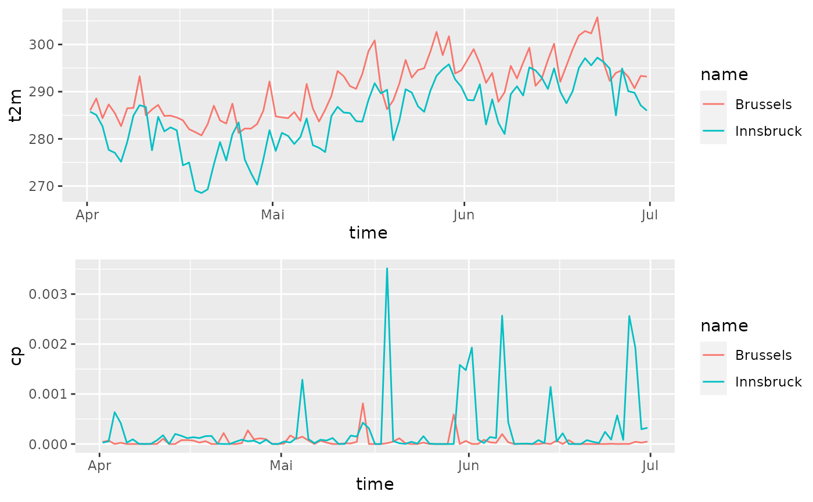

Specify data to be downloaded
This example shows how to download gridded analysis data (based on ERA5) over four months, 12 UTC only. Step one is to set up Before starting downloading data a configuration object must be created using eupp_config() which contains the specification of the data to be retrieved.
# Loading the package
library("eupp")
# Create 'dates' vector
dates <- seq(as.Date("2017-04-01"), as.Date("2017-06-30"), by = 1L)
# Create custom configuration
conf <- eupp_config(product = "analysis",
level = "surface",
date = dates, # dates
parameter = c("2t", "cp"), # two different parameters/variables
steps = 12, # 12 o'clock (UTC)
cache = "_cache") # cache is not requiredThe function eupp_config() returns an object of class eupp_config which contains all required information to download the data set.
print(conf)## EUPP Config
## Product: analysis (ana)
## Level: surface
## Date(s): 91 dates
## Parameter: 2t, cp
## Hours: 12
## Version: 0
## Cache: _cache
## Area: not definedDownloading data
As for all gridded data sets, three options exist for downloading the data. eupp_download_gridded() allows to download and store the data set on disc (GRIB version 1 or NetCDF). Alternatively the data can be retrieved as stars object.
Note that getting the data in the NetCDF format and retrieving the data as stars object require the ecCodes tools to be installed.
# Retrieving the data set defined by 'config' as stars object
devtools::load_all("../")## ℹ Loading eupp##
## By downloading data from this dataset, you agree to the terms and conditions defined in
## https://github.com/retostauffer/eupp/blob/main/README.md
## If you do not agree with such terms, do not download the data.
library("stars")
data <- eupp_get_gridded(conf)## Converting grib file to netcdf
## t2m, cp,Interpolate data
We are interested in bi-linearely interpolated data for two different locations (Innsbruck and Brussles). This can be done by setting up a simple feature data.frame (package sf) …
library("sf")
# Create simple features data.frame
locations <- data.frame(name = c("Innsbruck", "Brussels"),
lon = c(11.39, 4.35),
lat = c(47.27, 50.85))
locations <- st_as_sf(locations, coords = c("lon", "lat"))
print(locations)## Simple feature collection with 2 features and 1 field
## Geometry type: POINT
## Dimension: XY
## Bounding box: xmin: 4.35 ymin: 47.27 xmax: 11.39 ymax: 50.85
## CRS: NA
## name geometry
## 1 Innsbruck POINT (11.39 47.27)
## 2 Brussels POINT (4.35 50.85)… to be used in combination with st_extract() to extract the data. This uses st_extract.eupp_stars(), a function interfacting stars::st_extract.stars().
# Perform interpolation based on stars::st_extract
interpolated <- st_extract(data, locations, bilinear = TRUE)The function st_extract() returns an object of class star which can be converted into a simple data.frame.
interpolated_df <- as.data.frame(interpolated)
head(interpolated_df)## geometry time t2m cp
## 1 POINT (11.39 47.27) 2017-04-01 12:00:00 285.7626 2.660420e-05
## 2 POINT (4.35 50.85) 2017-04-01 12:00:00 286.0349 4.207006e-05
## 3 POINT (11.39 47.27) 2017-04-02 12:00:00 285.0700 5.173817e-05
## 4 POINT (4.35 50.85) 2017-04-02 12:00:00 288.5669 6.900313e-05
## 5 POINT (11.39 47.27) 2017-04-03 12:00:00 282.6679 6.372409e-04
## 6 POINT (4.35 50.85) 2017-04-03 12:00:00 284.3760 -8.673617e-19As we have multiple locations we will append the name of the location via match() to be able to plot both time series (here using ggplot2).
# Appending 'name'
idx <- match(interpolated_df$geometry, locations$geometry)
interpolated_df$name <- locations$name[idx]
library("ggplot2")
library("ggpubr")
g1 <- ggplot(interpolated_df) + geom_line(aes(x = time, y = t2m, group = name, colour = name))
g2 <- ggplot(interpolated_df) + geom_line(aes(x = time, y = cp, group = name, colour = name))
ggarrange(g1, g2, nrow = 2)
stars functionality
As eupp_get_gridded() returns an object of class eupp_stars which inherits from stars, complete stars functionality can be for plotting or subsetting.
# 4 Dimensions, the first one is along variables
names(data)## [1] "t2m" "cp"
dim(data)## x y time
## 93 125 91
# var x y time
plot(data["t2m", , , 10:13])